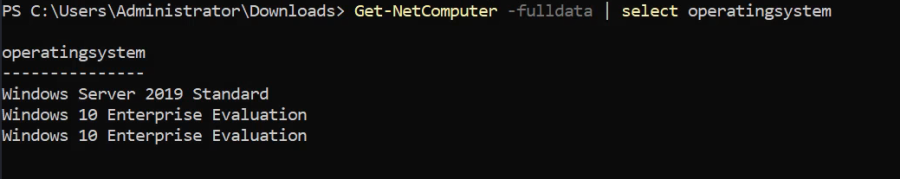
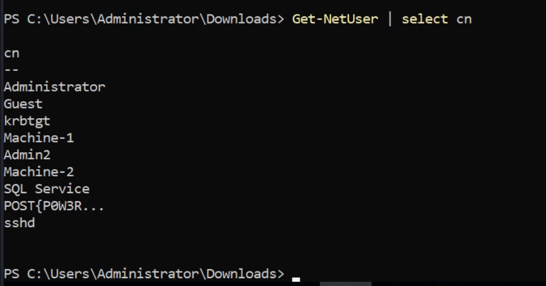
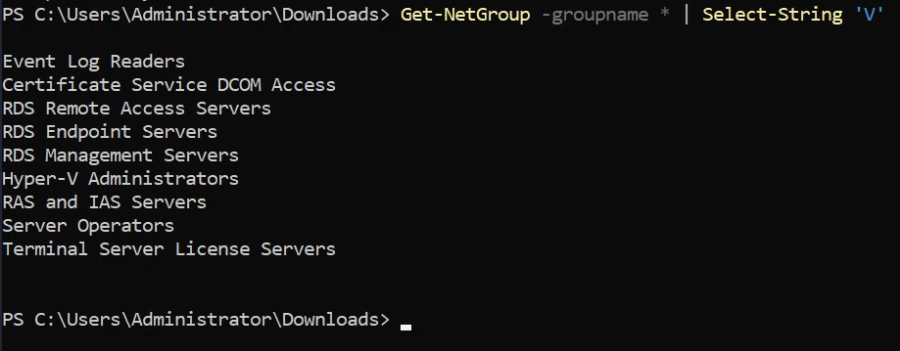
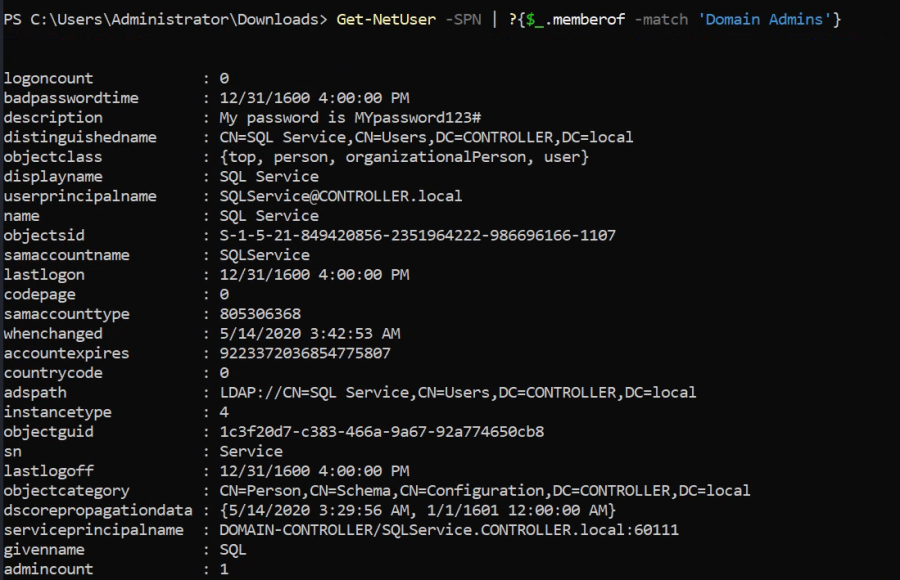

Hands on
THM: https://tryhackme.com/room/activedirectorybasics
Task: 8
Lab Setup -
1.) Deploy the Machine
2.) SSH or RDP into the machine (or use the browser-based instance)
Username: Administrator
Password: password123@
Domain: CONTROLLER.local
PowerView Setup -
1.) cd Downloads - navigate to the directory PowerView is in
2.) powershell -ep bypass - load a powershell shell with execution policy bypassed
3.) . .\PowerView.ps1 - import the PowerView module

Powerview Cheatsheet: https://gist.github.com/HarmJ0y/184f9822b195c52dd50c379ed3117993
Some Commands:
Get-NetComputer -fulldata | select operatingsystem : Gets a list of all operating systems on the domain

Get-NetUser | select cn : Gets a list of all users on the domain

Get-NetGroup -groupname * : Shows all the groups of the domain
Get-NetGroup -groupname * | Select-String 'V' : Shows all the groups of the domain and Select_string is used as grep

Get-NetUser -SPN : Shows all SPN users
Get-NetUser -SPN | ?{$_.memberof -match 'Domain Admins'} : Shows SPN users who are also the member of Domain Admins group
